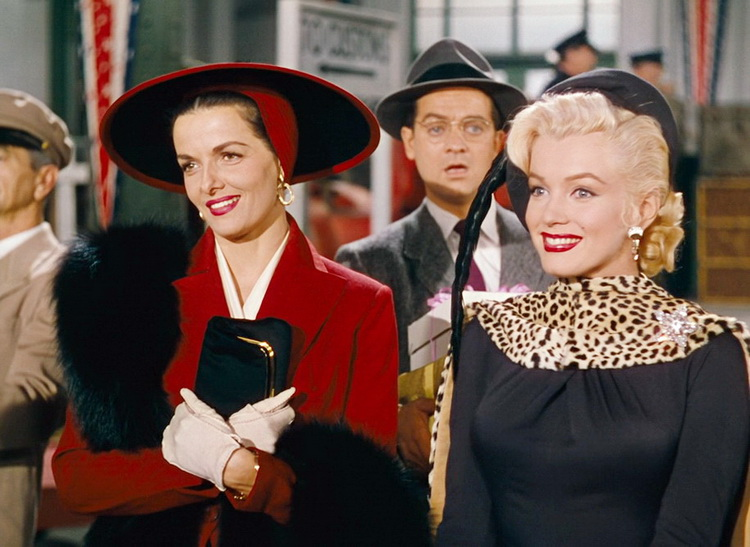
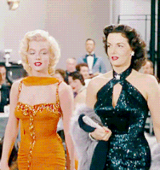

| Сюжет | Мое мнение | |
|---|---|---|
|  | Шоу-герлз Лорелей и Дороти отправляются на гастроли в Париж. За ними тайно следит частный детектив, нанятый отцом миллионером, чтобы доказать сыну, что Лорелей любит его подарки. | Если вы хотите сделать ваш фильм успешным,
добавьте туда красивую и в то же время глупенькую девушку.
Фильм "Джентльмены предпочитают блондинок" отлично с этим справился,
да и Мерилин Монро справилась с этим прекрасно.
Много забавных моментов, с которых можно от души посмеяться!  |